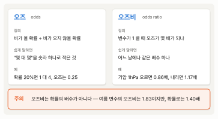
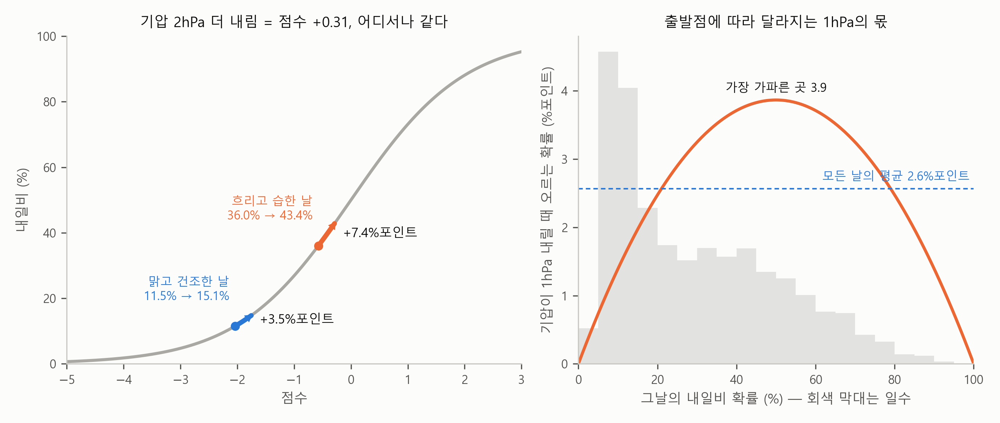

4. 계수를 어떻게 읽나 — 오즈와 확률의 차이#
보고서의 표에는 기압 변화에 대한 숫자가 셋 있습니다. 계수 −0.155, 오즈비 0.86, 확률 변화 −2.6%포인트입니다. 앞 절에서 본 것처럼 계수의 부호는 방향을 말합니다. 계수가 음수이므로 기압이 많이 떨어질수록 내일 비가 올 확률이 높습니다. 이 절의 답을 먼저 말하면 이렇습니다. 계수의 크기는 확률로 곧바로 바꿔 말할 수 없습니다. 확률이 얼마나 오르는지는 그날의 날씨에 따라 다르기 때문입니다. 그래서 확률로 말할 때는 대표적인 날을 골라 계산하거나, 모든 날의 평균(기압이 1hPa 내릴 때 2.6%포인트)을 냅니다. 오즈비 0.86은 계수를 어느 날에나 같은 숫자 하나로 바꾼 것입니다.
오즈 — 확률을 다르게 말하는 법#
확률을 말하는 방법은 하나가 아닙니다. “내일 비가 올 확률은 20%”를 다르게 말하면 “비가 올 가능성과 오지 않을 가능성이 1 대 4”입니다. 이런 날이 다섯 번 있으면 한 번은 비가 오고 네 번은 오지 않는다는 뜻이죠. 이 1 대 4를 나눗셈 하나로 적은 것이 오즈(odds)입니다. 비가 올 확률을 비가 오지 않을 확률로 나눈 값입니다.
표 4-1은 확률 세 가지를 오즈로 바꾼 것입니다.
표 4-1. 확률과 오즈
비가 올 확률 |
20% |
50% |
80% |
|---|---|---|---|
(비가 오지 않을 확률) |
(80%) |
(50%) |
(20%) |
비가 올 오즈 |
0.2 ÷ 0.8 = 0.25 |
0.5 ÷ 0.5 = 1 |
0.8 ÷ 0.2 = 4 |
표에서 보듯이 확률이 50%이면 오즈는 1입니다. 올 가능성과 오지 않을 가능성이 똑같다는 뜻이죠. 확률이 80%이면 오즈는 4, 비가 오는 날이 오지 않는 날의 네 배라는 뜻입니다.
오즈비 — 어느 날에나 같은 배수#
앞 절에서 “점수”라고 부른 것은 수학적으로 따져 보면 오즈에 로그를 취한 값입니다. 그래서 다중회귀분석 장에서 로그가격의 계수를 “몇 배”로 바꿀 때처럼, 계수 \(b\)로 \(e^{b}\)를 계산하면 오즈가 몇 배가 되는지 나옵니다. 강남구의 계수 1.032를 \(e^{1.032}\) ≈ 2.8배로 바꾼 것과 같은 계산입니다. 기압 변화의 계수 −0.155로 계산하면 \(e^{-0.155}\) ≈ 0.86입니다. 기압이 1hPa 오르면 오즈가 0.86배가 된다는 뜻입니다. 이 0.86이 보고서 표의 오즈비(odds ratio)입니다. 다른 조건은 같고 기압만 1hPa 더 오른 날의 오즈를 원래 날의 오즈로 나눈 비율이라서 오즈비라고 부릅니다. 거꾸로 기압이 1hPa 내리면 오즈는 1 ÷ 0.86 ≈ 1.17배가 됩니다.
오즈비의 좋은 점은 어느 날에나 똑같다는 것입니다. 보고서의 맑은 날과 흐린 날로 확인해 봅시다. 기압이 2hPa 더 내리면 오즈는 약 1.36배가 됩니다. 1hPa에 1.17배씩 두 번 곱해진 셈입니다. 표 4-2가 그 계산입니다.
표 4-2. 기압이 2hPa 더 내리면 — 맑은 날과 흐린 날의 확률과 오즈
확률 |
오즈 |
오즈의 배수 |
확률의 차이 |
|
|---|---|---|---|---|
맑고 건조한 날 |
11.5% → 15.1% |
0.130 → 0.177 |
1.36배 |
+3.5%포인트 |
흐리고 습한 날 |
36.0% → 43.4% |
0.563 → 0.767 |
1.36배 |
+7.4%포인트 |
주: 맑고 건조한 날은 21시 습도 50%, 구름양 2, 흐리고 습한 날은 습도 85%, 구름양 8. 둘 다 오늘 비가 오지 않았고 여름이 아니다.
표에서 보듯이 오즈는 두 날 모두 1.36배가 됐습니다. 확률의 차이는 3.5%포인트와 7.4%포인트로 두 배 넘게 다른데, 오즈의 배수는 같습니다. 그래서 오즈비는 “기압이 1hPa 오르면 오즈가 0.86배”(내리면 1.17배)라는 숫자 하나로, 어떤 날인지 정하지 않고 말할 수 있습니다. 로지스틱 회귀의 결과에 오즈비가 흔히 함께 실리는 것도 이 때문입니다.
오즈비는 확률의 배수가 아니다#
오즈비에는 조심할 점이 하나 있습니다. 여름의 오즈비는 1.83입니다. 이것을 “여름에는 비가 올 확률이 1.83배”로 해석하면 틀립니다. 1.83배가 되는 것은 오즈이지 확률이 아닙니다.
확률로 따져 봅시다. 3,651일 하루하루에 대해, 다른 조건은 그날 그대로 두고 여름이라고 했을 때와 여름이 아니라고 했을 때의 확률을 각각 계산해 평균하면 37.0%와 26.5%입니다. 확률로는 1.40배입니다. 1.83배와는 꽤 다르죠. 오즈비가 1보다 크면 확률도 오르고 1보다 작으면 확률도 내리므로 방향은 같지만, 확률의 배수는 언제나 오즈비보다 1에 가깝습니다.
💡 팁: AI의 보고서에서 “○○일 때 △△할 가능성이 1.83배 높다”는 문장을 보면, 그 1.83이 오즈의 배수인지 확률의 배수인지 확인하세요. 로지스틱 회귀의 오즈비를 확률의 배수처럼 적는 일이 드물지 않습니다. 확인하는 방법은 간단합니다. “이 배수는 오즈비야, 아니면 확률의 배수야? 확률로는 각각 몇 %야?”라고 물으면 됩니다.
지금까지 본 오즈와 오즈비를 그림 4-1에 정리했습니다.

그림 4-1. 오즈와 오즈비 한눈에 보기. 오즈비는 어느 날에나 같은 배수지만, 확률의 배수는 아니다.
확률의 차이 — 두 가지 방법#
오즈비는 편리하지만, 오즈는 일상에서 잘 쓰지 않는 말이라 직관적으로 이해하기 어렵습니다. “오즈가 0.86배”보다는 “확률이 몇 %포인트 오른다”가 훨씬 잘 들어옵니다. 문제는 확률의 차이가 그날의 날씨에 따라 다르다는 것입니다. 그래서 두 가지 방법을 씁니다.
첫째 방법은 대표적인 경우를 골라 계산하는 것입니다. 표 4-2처럼 “맑고 건조한 날”과 “흐리고 습한 날”을 정하고, 각각 기압이 그대로일 때와 2hPa 더 내렸을 때의 확률을 계산해 뺍니다. 보고서의 요약 둘째 줄과 보고서 그림의 왼쪽 패널이 이 방법입니다. 어떤 경우를 고를지는 분석하는 사람이 정해야 하고, 경우를 바꾸면 숫자도 바뀝니다.
둘째 방법은 모든 날의 평균을 내는 것입니다. 3,651일 하루하루에 대해 “이날 기압이 조금 더 내렸다면 내일비 확률이 얼마나 올랐을까”를 계산하고, 1hPa당으로 바꿔 평균합니다. 이렇게 얻은 2.6%포인트가 보고서 표의 확률 변화이고(표에는 기압 변화가 1hPa 클 때, 즉 기압이 오를 때의 값이라 −2.6으로 적혀 있습니다), 이것을 평균 한계효과(average marginal effect)라고 부릅니다. “한계”는 경제학에서 “조금 더 늘렸을 때”를 뜻하는 말입니다. 한계비용이 물건 하나를 더 만들 때 드는 비용인 것처럼요. 이름에 “효과”가 붙어 있지만, 기압을 내리면 비가 온다는 뜻이 아니라 “기압이 1hPa 더 내린 날은 평균적으로 다음 날 비가 올 확률이 2.6%포인트 높다”는 계산 결과입니다.
그림 4-2이 두 방법을 함께 보여 줍니다. 왼쪽 패널은 앞 절의 로지스틱 곡선 위에 맑은 날과 흐린 날을 놓은 것입니다. 기압이 2hPa 더 내리면 점수는 두 날 모두 0.31 커집니다. 가로로 움직인 거리는 같은데, 곡선의 기울기가 달라 올라간 높이가 다릅니다. 오른쪽 패널의 가로축은 그날의 내일비 확률이고, 주황 곡선은 그런 날에 기압이 1hPa 더 내리면 확률이 몇 %포인트 오르는지입니다. 회색 막대는 그런 날이 며칠 있었는지입니다.

그림 4-2. 왼쪽: 로지스틱 곡선 위의 맑은 날과 흐린 날. 동그라미는 기압 변화가 0인 출발점, 화살표 끝은 기압이 2hPa 더 내린 자리다. 기압이 2hPa 더 내리면 점수는 두 날 모두 0.31 커지지만 확률이 오르는 폭은 다르다. 오른쪽: 내일비 확률이 몇 %인 날에 기압이 1hPa 더 내리면 확률이 몇 %포인트 오르는지(주황 곡선). 회색 막대는 그런 날의 수, 파란 점선은 모든 날의 평균이다.
그림에서 보듯이 1hPa의 몫은 곡선이 가장 가파른 곳, 즉 확률이 50%인 날에 가장 큽니다. 3.9%포인트입니다. 확률이 50%에서 멀어질수록 몫은 작아집니다. 그런데 회색 막대를 보면, 이 데이터에는 내일비 확률이 5 ~ 20%인 날이 가장 많습니다. 그런 날의 1hPa 몫은 1%포인트 안팎에서 2%포인트 남짓입니다. 50% 근처의 날은 그보다 적습니다. 그래서 모든 날을 평균한 값(파란 점선)은 꼭대기의 3.9%포인트보다 한참 낮은 2.6%포인트가 됩니다.
선형확률모형과 비교하면#
2절에서 직선의 계수가 곡선을 써서 계산한 평균적인 확률의 차이와 비슷하게 나오는지 이 절에서 확인하겠다고 했습니다. 표 4-3은 로지스틱 회귀의 평균 한계효과와 선형확률모형의 계수(표 2-2)를 나란히 놓은 것입니다. 둘 다 “다른 조건이 같다면 그 변수가 1 클 때 확률이 몇 %포인트 높은가”를 말하는 숫자입니다.
표 4-3. 확률 변화(%포인트) — 로지스틱 회귀의 평균 한계효과와 선형확률모형의 계수
로지스틱 회귀 (평균 한계효과) |
선형확률모형 |
|
|---|---|---|
저녁 습도 (21시, %) |
0.19 (0.05) |
0.18 (0.05) |
기압 변화 (21시 − 9시, hPa) |
−2.56 (0.27) |
−2.56 (0.26) |
저녁 구름양 (21시, 0 ~ 10) |
2.96 (0.18) |
3.24 (0.20) |
오늘비 (21시까지, 예 = 1) |
4.67 (1.82) |
7.36 (1.92) |
여름 (6 ~ 8월 = 1) |
10.05 (1.49) |
10.28 (1.74) |
주: 괄호는 표준오차. \(n\) = 3,651일.
표에서 보듯이 다섯 변수 가운데 넷은 두 숫자가 아주 가깝습니다. 기압 변화는 −2.56과 −2.56으로 같습니다. 오늘비만 4.67과 7.36으로 차이가 큽니다. 평균으로 숫자 하나를 말하는 데는 직선도 곡선과 크게 다르지 않은 결과를 내는 경우가 많습니다. 다만 오늘비처럼 둘이 다른 변수도 있으니, 두 결과를 함께 보면 좋습니다.
그렇다면 왜 굳이 곡선을 쓸까요? 평균 하나로 말할 때는 비슷해도, 하루하루의 확률을 말할 때는 다르기 때문입니다. 선형확률모형은 138일에 대해 0%보다 낮은 확률을 내놓았고, 어느 날에나 기압 2hPa의 몫을 5.1%포인트로 똑같이 말했습니다. 로지스틱 회귀는 모든 날의 확률을 0%와 100% 사이에서 내놓고, 맑은 날에는 3.5%포인트, 흐린 날에는 7.4%포인트라고 말합니다.
💡 팁: AI에게 로지스틱 회귀를 부탁할 때는 계수와 오즈비만 받지 말고 확률의 말로도 받으세요. “오즈비와 함께 평균 한계효과를 %포인트로 보여 주고, 대표적인 두 경우를 골라 예측 확률과 그 차이도 계산해 줘”라고 요청하면 됩니다. 이 장의 보고서가 이렇게 요청해서 받은 것입니다.
요약 — 이 절의 물음과 답
계수 −0.155는 무엇을 말하나? 부호가 음수이므로 기압이 많이 떨어질수록 내일 비가 올 확률이 높다. 하지만 크기를 확률의 차이로 그대로 해석할 수는 없다. 확률이 얼마나 오르는지는 그날의 날씨에 따라 다르다.
오즈비 0.86은 어떻게 해석하나? 오즈는 비가 올 확률을 오지 않을 확률로 나눈 값이다. 기압이 1hPa 오르면 오즈가 0.86배, 거꾸로 1hPa 내리면 약 1.17배가 된다는 뜻이다. 어느 날에나 같은 배수라서 숫자 하나로 말할 수 있다. 다만 확률이 그 배수만큼 바뀐다는 뜻은 아니다. 여름의 오즈비는 1.83이지만, 확률로는 1.40배였다.
확률로는 얼마나 오르나? 날마다 다르다. 대표적인 날을 골라 계산하면 기압 2hPa에 맑은 날 3.5%포인트, 흐린 날 7.4%포인트이고, 모든 날을 평균하면 1hPa에 2.6%포인트다. 이 평균을 평균 한계효과라고 한다.